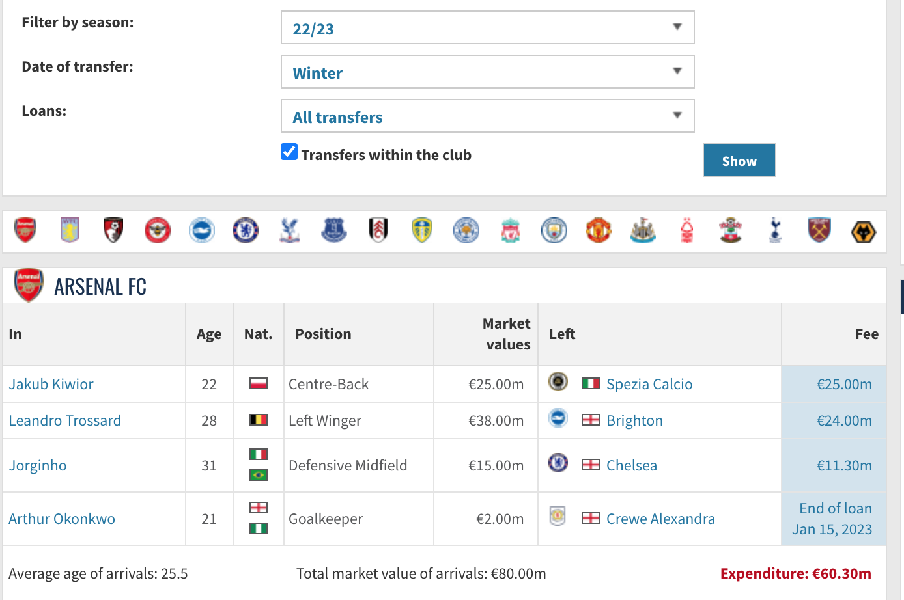
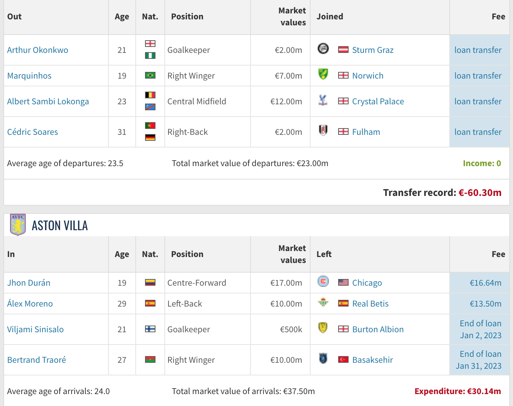
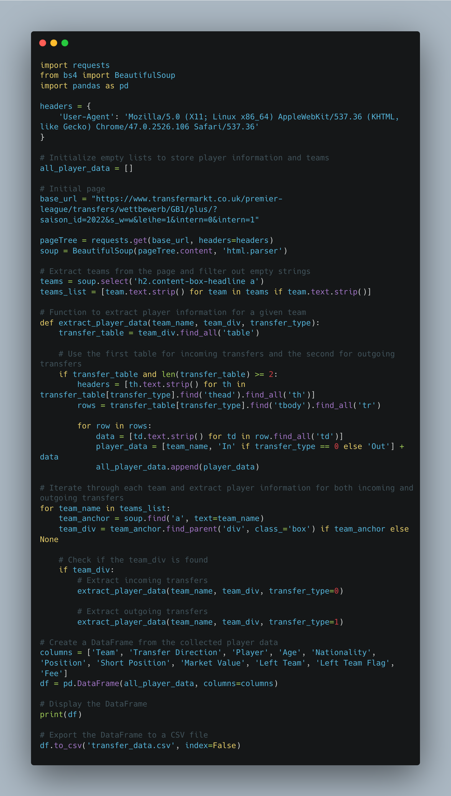
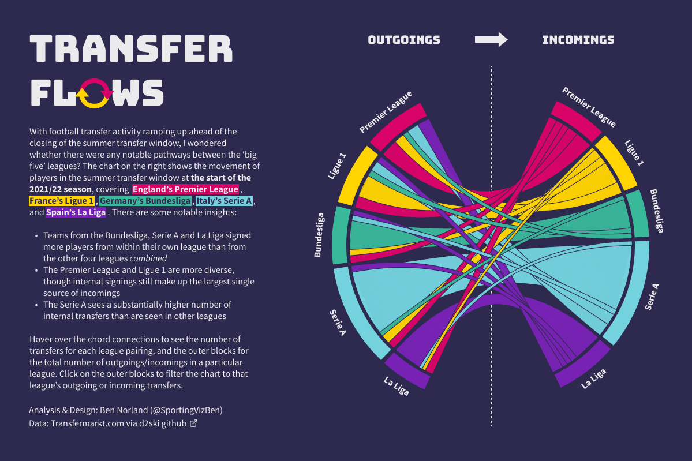

It's Transfer Season (Python)
Hi All,
With the end of the transfer season, I thought it would be good to do a quick code share on how to look at transfer data.
For this tutorial we look at a previous season, 2022, and solely the winter transfers within the Premier league.

Here is the website screen shot of Transfermarkt and the filters we are looking at of Winter and year 22/23.
Notice that this is a little more challenging to previous weeks because we have the club name now in a banner, and the associated details below.

We also have sections that are whether the play was "in" or "out", i.e arriving or departing the club.
What does the code do in general?
This Python script is a web scraper designed to extract information about Premier League football transfers from the Transfermarkt website. The script utilizes the requests library to send HTTP requests, the BeautifulSoup library to parse HTML content, and the pandas library to organize the collected data into a DataFrame. The target information includes details about incoming and outgoing transfers for each Premier League team, such as player names, ages, nationalities, positions, market values, and transfer fees.
The script begins by sending a request to the specified URL, which contains data on Premier League transfers for the 2022 season. It then extracts the list of teams from the page and filters out any empty strings. After that, it defines a function (extract_player_data) to extract player information for a given team, considering both incoming and outgoing transfers. The script then iterates through each team, finds the relevant HTML elements for incoming and outgoing transfers, and uses the function to extract and store the player data in a list (all_player_data).
Finally, the script creates a pandas DataFrame from the accumulated player data, defines column names, and prints the DataFrame to the console. Additionally, it exports the DataFrame to a CSV file named 'transfer_data.csv' in the current working directory, providing a structured and tabular representation of the Premier League transfer information.

I've added this example file transfer_data for the 22/23 winter transfer season to the repo.
I will leave it to you to try find this seasons transfers!
Bonus:
I've added some additional code that loops through multiple years, (both summer and winter) transfers. I've added this to the repository for years from 2000- before the transfer season started in January. This will be the "TwentyYearsPLTransfers.py" & corresponding 20Y_PL_transfer_data.csv dataset.
Going Further:
- Why not try collate data for another league?
- Why not try visualise flow of individuals between clubs?
If you are looking for the art of what is possible, why not check out this dashboard by Ben Norland looking at football transfer flows. It's a pretty awesome chord diagram!

As always, Let me know how you get on with this one. I can be reached on Twitter, @_CJMayes.
LOGGING OFF,
CJ